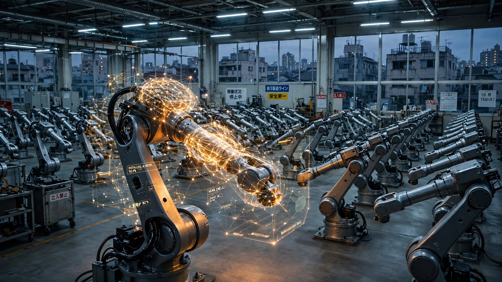

Japan Loses 856,000 Workers a Year. Its $6.7 Billion Answer Is a Robot Brain, Not Robot Bodies.

On Thursday, Nvidia CEO Jensen Huang stood in Tokyo and delivered a line that sounded like flattery but was really a diagnosis: "Japan invented modern manufacturing; now, it is building the AI factories that will power the next industrial revolution." He was announcing that Noetra, a government-backed consortium of 44 Japanese companies, would purchase 27,500 of Nvidia's next-generation Rubin GPUs to build a 140-megawatt AI computing center for physical AI research, with SoftBank, Sony, Honda, and NEC as anchor investors. Tokyo is writing the check: ¥387.3 billion ($2.4 billion) in the first year alone, with total support planned at ¥1 trillion ($6.7 billion) over five years.
The goal is a trillion-parameter multimodal foundation model that can understand the physical world well enough to drive robots, control factory machines, and pilot autonomous vehicles, with construction starting in April 2027 and operations launching in June 2028. Pretrained model weights will be shared broadly with Japanese industry, a design choice that Huang called sovereign AI and that METI Minister Ryosei Akazawa branded the "FRONTia Project." What nobody on stage in Tokyo explicitly said is why Japan needs this more urgently than any other country on Earth, and the reason is a kind of arithmetic that no amount of government rhetoric can soften.
The Cliff Japan Has Been Hiding
Japan's 2025 census confirmed what demographers had been projecting for a decade: the population dropped to 123.05 million, a record decline of 3.1 million from 2020 and the steepest five-year contraction since census-taking began in 1920, driven by a fertility rate of 1.15 that sits barely above half the 2.1 replacement threshold. Over 90% of Japanese municipalities lost population. These are familiar numbers, recited so often in policy papers and newspaper ledes that they have acquired a kind of background-radiation quality, alarming in the abstract but rarely translated into the specific economic implications that make boardrooms sweat.
Put concretely: Japan's working-age population, ages 15 to 64, peaked at 87.3 million in 1995 and has since fallen 16% to 73.7 million in 2024, according to the OECD, with projections showing it will drop below 60 million by 2040. That trajectory represents a loss of roughly 13.7 million working-age people over 16 years, or about 856,000 per year, and Japan's government projects an 11-million-worker labor shortage by 2040 as a consequence.
Yet the actual labor force has been growing, which is the part that makes the crisis look manageable until you examine why. According to the Japan Institute for Labour Policy and Training, the labor force expanded from 69.02 million in 2020 to 70.75 million in May 2026 despite a declining population base because Japan has been running one of the most aggressive labor mobilization campaigns in the developed world: the employment rate for workers aged 55 to 64 hit 79.2% in 2024, among the highest in the G7, female participation has surged, and retirement ages are rising across both public and private sectors. Participation for the 15-and-over population climbed from 62.0% in 2020 to 64.6% in May 2026, a gain of 2.6 percentage points that translated to roughly 2.9 million additional workers entering the labor force even as the underlying population shrank by about 480,000.
This mobilization strategy has a ceiling, and Japan is approaching it faster than most analysts acknowledge. Japan's participation rate already exceeds that of the United States (62.5%) and is converging on Nordic levels, but unlike Scandinavia, Japan's demographics are tilting sharply toward age cohorts that will exit the labor force regardless of policy. With 55-to-64-year-olds already working at near-ceiling rates and the proportion of the population aged 65 and over projected to approach 40% by 2070, the realistic participation ceiling sits around 66 to 67%. At the current pace of roughly 0.4 to 0.5 percentage points per year, Japan hits that ceiling somewhere between 2029 and 2030, and after that, raw demographic decline takes over unchecked, with the labor force shrinking by hundreds of thousands per year and no participation lever left to pull.
Noetra's AI factory is scheduled to become operational in June 2028, and the "artificial brain" it aims to produce is targeted for fiscal 2030, a timeline that maps directly onto the moment when Japan's participation trick stops working.
The 11x Gap
Japan is already the fourth most automated manufacturing economy on Earth, a fact that makes the workforce crisis feel like it should already be solved. According to the International Federation of Robotics, Japan had 446 industrial robots per 10,000 manufacturing employees in 2024, behind only South Korea (1,220), Singapore (818), and Germany (449), with robot density growing 5% annually since 2019. Japan's automotive sector alone has 1,531 robots per 10,000 workers, and the country installed approximately 13,000 new industrial robots in its automotive industry and 14,000 in electronics in 2024, for a total across all sectors of roughly 47,000 units per year. Operational stock data from the IFR implies Japan has about 452,000 industrial robots in active service, representing 9.7% of the global total of 4.66 million.
Now run the math that nobody in Tokyo is putting on slides, the calculation that connects Japan's demographic trajectory to its robot deployment rate and reveals the scale of the gap between what Japan has and what it needs.
Japan must compensate for roughly 856,000 lost workers per year starting in the late 2020s. Productivity research suggests each industrial robot replaces the output equivalent of approximately 1.6 workers in manufacturing settings, depending on the application, which means offsetting 856,000 workers annually would require installing about 535,000 new robots per year. Japan currently installs 47,000, which puts the shortfall at 11x: for every robot Japan deploys, it needs to deploy eleven to keep pace with the workers it is losing.
The cost is proportional and sobering: an average industrial robot runs $50,000 to $100,000 depending on type and application, with a midpoint around $75,000 according to IFR-cited estimates, and at 535,000 units per year times $75,000, the annual hardware bill comes to $40.1 billion, a sum that would consume roughly 40% of Japan's total manufacturing capital expenditure of approximately $100 billion per year and crowd out virtually every other form of capital investment in the process.
Why the Brain, Not the Bodies
This is where Noetra's bet becomes intelligible, because it reframes the problem entirely: Japan does not have a robot supply problem, and it does not have a robot cost problem in the way the $40.1 billion number implies. It has a robot intelligence problem.
Japan produces 38% of the world's industrial robots through companies like Fanuc, Yaskawa Electric, Kawasaki Heavy Industries, and Epson, which is precisely why Huang flew to Tokyo to announce partnerships with Fanuc and Yaskawa, because they are already the global leaders in robot hardware and the bodies are not the bottleneck. What limits deployment is that industrial robots today are narrow-task machines: a welding robot welds, a pick-and-place arm picks and places, and each application requires custom programming, integration, and testing that can cost as much as the robot itself, with the average industrial robot taking weeks to months to deploy for a new task and the programming starting from scratch for each variation in the workflow.
Physical AI foundation models promise to break this constraint at its root. A general-purpose model trained on millions of hours of robot interaction data, paired with simulation environments and real-world sensor inputs, could theoretically allow a single robot to be instructed in natural language and adapt to new tasks without reprogramming, so that one model could drive a Fanuc arm welding car frames on Monday and sorting packages on Friday. Nvidia's Isaac GR00T, Cosmos, and NeMo software stacks, which Noetra will integrate, are designed precisely for this conversion of language instructions into executable robot behaviors inside physics-accurate simulation environments before the machine ever touches real hardware.
Noetra's ¥1 trillion is not buying robots. It is buying the intelligence layer that could make Japan's existing 452,000 robots, and every new one Fanuc and Yaskawa produce, dramatically more versatile, converting each narrow-task machine into something closer to a general-purpose worker. At $1.34 billion per year, the AI investment is barely 3.3% of the $40.1 billion annual hardware spend that full demographic replacement would demand, which reveals the core logic of Japan's strategy: the brain is cheap, and if it works, each dollar spent on intelligence multiplies the value of every dollar already sunk into bodies.
What Could Go Wrong
The entire theory of the case depends on a chain of assumptions, each of which could break, and the three most fragile deserve scrutiny.
Trillion-parameter physical AI models do not exist yet, and the gap between the current state of the art and what Japan needs is not incremental. Current models for robot control are orders of magnitude smaller than what Noetra is targeting, and no model has demonstrated the kind of general-purpose dexterity and adaptability that replacing diverse human labor across manufacturing, logistics, elder care, and food service would require. Google DeepMind's RT-2 and Nvidia's own GR00T have shown promising results in structured lab environments, but a model that can reliably fold laundry, stock shelves, and assemble electronics on an unmodified factory floor remains a research target rather than an engineering problem as of July 2026.
The 1.6x productivity ratio underpinning the 535,000-unit calculation comes from existing narrow-task robots working in controlled manufacturing environments, and general-purpose robots operating outside those environments, in elder care, food service, logistics, and construction, would face lower productivity ratios, higher failure rates, and longer integration timelines, which means the 535,000-unit calculation is probably an undercount of what Japan would actually need to deploy.
Noetra's timeline is the sharpest risk of all: the AI factory becomes operational in June 2028, the first foundation model is targeted for fiscal year 2027 (by March 2027), and the full "artificial brain" capable of understanding complex real-world environments is projected for fiscal 2030, which means mass deployment of physical AI-powered robots at the scale Japan needs is realistically a 2031-to-2033 proposition at the earliest, leaving Japan facing two to three years of accelerating workforce decline before the technology could plausibly arrive at scale.
Limitations
This analysis uses IFR robot installation data and OECD working-age population projections that are reported with significant lag. The 1.6x worker-replacement ratio is a composite estimate drawn from manufacturing productivity studies and is less reliable outside factory settings, where most of Japan's 11 million worker shortfall will materialize. The participation ceiling estimate of 66 to 67% is an inference based on comparative OECD data and aging demographics, not a published forecast. Robot costs vary widely by type, and humanoid robots projected for the 2030s could be substantially cheaper per unit than traditional industrial arms, potentially altering the cost calculation. Finally, the Noetra funding commitment of ¥1 trillion is a five-year target announced by METI, not a legally binding appropriation, and could change with government budgets.
The Strongest Case Against
The most serious challenge to this analysis is that Japan's labor shortage is not purely a headcount problem. GDP per worker in Japan has been rising at roughly 1.2% annually. If AI tools, not physical robots, boost white-collar and service-sector productivity by 20 to 30% over the next decade, as some consultancies project, the actual number of physical workers Japan needs drops substantially. In this scenario, Noetra's foundation model does more economic good running on laptops and in data centers, automating administrative work, medical diagnostics, and financial analysis, than it does controlling robot arms on factory floors. The 11-million-worker gap assumes constant productivity per remaining worker. If that assumption is wrong, the physical robot deployment gap shrinks from an impossible 11x to a manageable 3 to 4x. Japan's real bet might not be on physical AI at all. It might be on cognitive AI that happens to fund its physical AI ambitions as a side effect.
What You Can Do
If you run a manufacturing operation that sources components from Japanese suppliers, ask whether your Tier 2 and Tier 3 vendors have automation roadmaps for 2028 to 2032. The labor squeeze will hit small and mid-tier manufacturers first, and supply disruptions will ripple outward before Noetra's technology reaches scale. If you are in the robotics industry, the Noetra model weights being shared with Japanese industry mean a new class of general-purpose robot applications will emerge on Japanese hardware first, probably Fanuc and Yaskawa platforms. Watch for integration SDKs beginning fiscal 2028. If you are an investor evaluating robot companies, the lesson from Japan's math is that the intelligence layer, not the hardware layer, is the binding constraint on robot deployment. Companies building general-purpose robot brains are solving the scarcer problem. And if you are Japan, hire immigrants while you wait. The math says the robot brain arrives about two years after the participation ceiling binds, and those two years need a bridge.
The Bottom Line
Japan makes more robots than any country on Earth and still cannot deploy them fast enough to replace the workers it is losing. The gap is not in production capacity; Fanuc and Yaskawa can build the bodies. The gap is in intelligence. Each of those 452,000 robots in Japan today does one task. The 11 million workers Japan is losing by 2040 each do dozens. Noetra's ¥1 trillion is a bet that a single physical AI foundation model, trained on 27,500 Rubin GPUs and shared across Japanese industry, can bridge that versatility gap and turn narrow factory arms into general-purpose colleagues. The bet is rational, even elegant. At $6.7 billion, the brain is 17 cents on every dollar the bodies would cost. Whether it arrives in time is a different question, and the population census does not negotiate timelines.